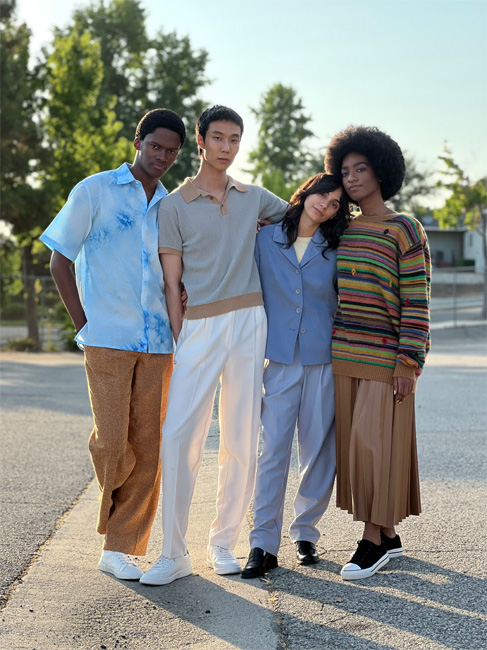
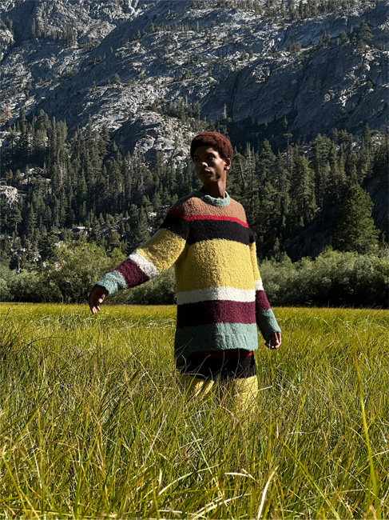
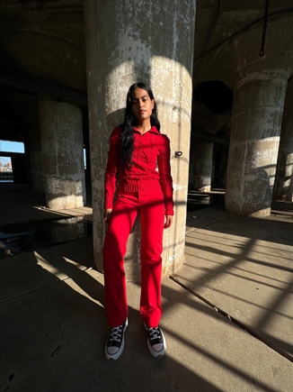

<div class="camera-computational-photography">
  <div class="shared-container">
    <div class="font-style-container text-container-1">
      <h3 class="intro">
        <span class="wrap">每張照片背後，</span>都是滿滿的科技。
      </h3>
    </div>

    <picture class="picture-style-container image-container-1">
      <source
        srcset="../../../../../public/images/section-camera-camera-computational-photography-1-large.jpg "
        media="(min-width:1068px)"
      />
      <source
        srcset="../../../../../public/images/section-camera-camera-computational-photography-1-medium.jpg"
        media="(min-width:734px)"
      />
      <source
        srcset="../../../../../public/images/section-camera-camera-computational-photography-1-small.jpg"
      />
      
    </picture>

    <div class="font-style-container text-container-2">
      <h4 class="title">
        智慧型 HDR 4 <span class="wrap">將場景的</span
        ><span class="wrap">每個部分最佳化。</span>
      </h4>

      <p class="text">
        運用神經網路引擎的機器學習能力，智慧型 HDR 4
        現在可為場景中的多個人物進行單獨調整。我們的軟體和影像訊號處理器
        (ISP)，會自動精細調整每個人的對比、光線和膚色，讓每個人看起來都神采奕奕。
      </p>
    </div>

    <picture class="picture-style-container image-container-2">
      <source
        srcset="../../../../../public/images/section-camera-camera-computational-photography-2-large.jpg "
        media="(min-width:1068px)"
      />
      <source
        srcset="../../../../../public/images/section-camera-camera-computational-photography-2-medium.jpg"
        media="(min-width:734px)"
      />
      <source
        srcset="../../../../../public/images/section-camera-camera-computational-photography-2-small.jpg"
      />
      
    </picture>

    <div class="flex-container-1">
      <div class="font-style-container text-container-3">
        <h4 class="title">
          <span class="wrap">深度融合能從多重曝光中</span
          ><span class="wrap">分析</span><span class="wrap">每個像素。</span>
        </h4>

        <p class="text">
          在中低光源的環境下拍攝時，就是深度融合大顯身手的時候。它運用神經網路引擎逐個像素分析不同曝光效果，並將最出色的部分融合到最終影像中。因此，能拍出非凡的細節，即使是最細緻的紋理也能在照片中細膩<span
            class="nowrap"
            >呈現。</span
          >
        </p>
      </div>

      <picture class="picture-style-container image-container-3">
        <source
          srcset="../../../../../public/images/section-camera-camera-computational-photography-3-large.jpg "
          media="(min-width:1068px)"
        />
        <source
          srcset="../../../../../public/images/section-camera-camera-computational-photography-3-medium.jpg"
          media="(min-width:734px)"
        />
        <source
          srcset="../../../../../public/images/section-camera-camera-computational-photography-3-small.jpg"
        />
        
      </picture>
    </div>
  </div>
</div>
